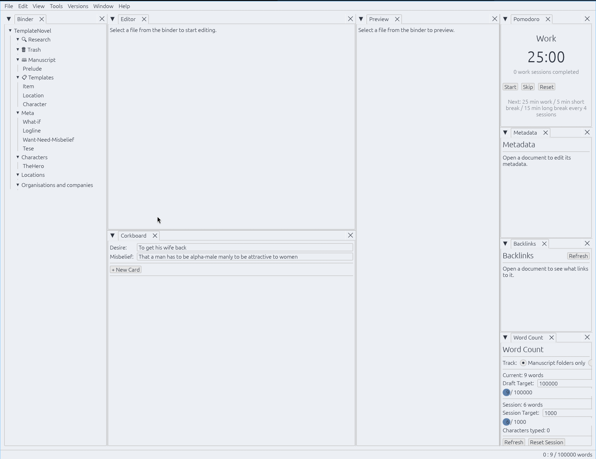
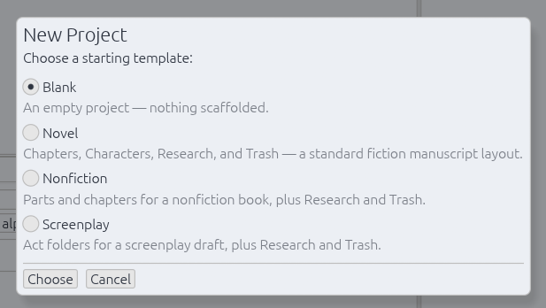
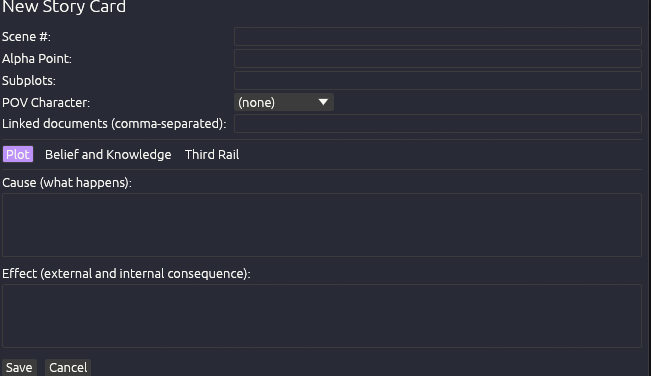
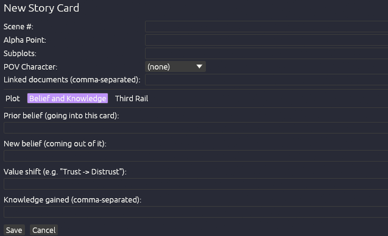
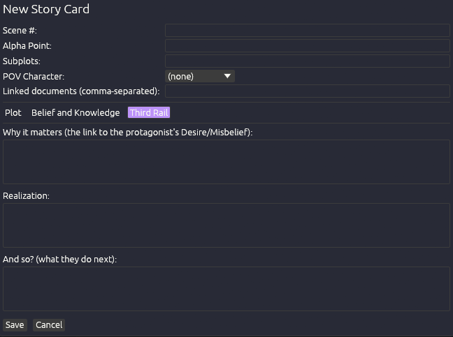
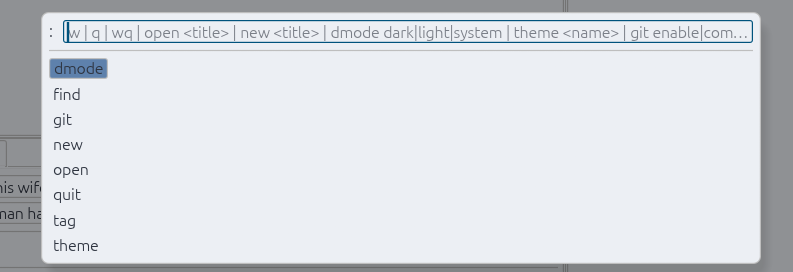
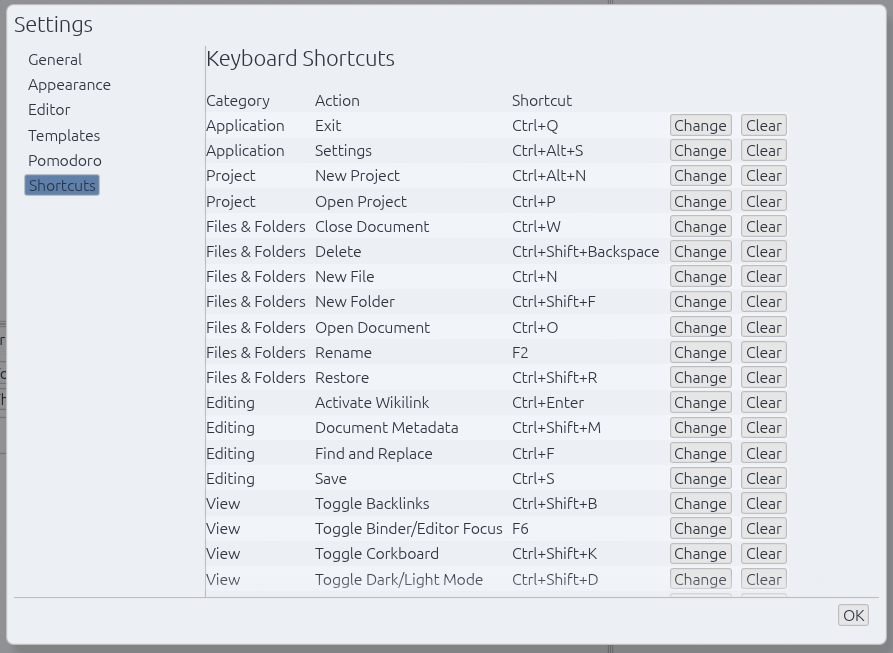
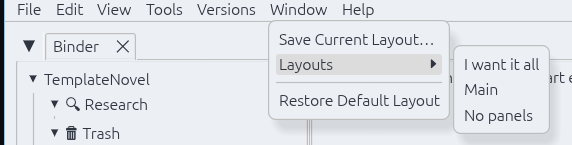

A modern and efficient editor built for authors and longform writers. Keep your manuscript in plain markdown files in plain folders; Smaragd adds the binder, the metadata, and the typesetting on top.
Binder, editor, preview, corkboard, metadata, backlinks, and tags are all tabs in one shared layout. Drag, split, float, or dock any of them, and it persists across restarts.
A project is just a folder of .md files. A small .smaragd/project.json holds project metadata — delete it and it's still a perfectly readable folder of markdown.
Research/Trash/Templates/Manuscript folder roles, built-in Blank/Novel/Nonfiction/Screenplay/Worldbuilding templates, and Story Genius–style corkboard cards with Alpha Point, Cause, Effect, and Why It Matters.
A spreadsheet-style view of every story card in manuscript order — POV, word count, and every Cause/Effect/Belief field as its own column, reorderable and hideable to fit what you're working on.
Pick a POV character and watch their arc unfold as a chain of Prior Belief → New Belief across the whole manuscript, in story order.
Obsidian-style [[links]] with autocomplete, a full backlinks panel, and frontmatter + inline #tags
Underlines words your dictionary doesn't recognize as you type. Twenty languages available as on-demand downloads — reviewed, license-clean Hunspell dictionaries fetched and verified right from Settings.
DOCX, EPUB, and print-ready PDF from one shared Style — 12 built-in styles from mass-market paperback to hardcover, with real sunk drop caps and running headers, genuine typesetting via the embedded Typst compiler.
Bring a manuscript in from DOCX, EPUB, a Scrivener project, or PDF — split into chapters where the format allows it, formatting preserved.
Maximizes the window, hides every other tab, and dims every paragraph but the one you're writing.
Gruvbox, Dracula, Nord, Catppuccin, Tokyo Night, and more built in — or create your own
Plugins in the embedded Rhai language add custom : commands, keyboard shortcuts, and save-time text transforms
Commit, push, and pull from the Versions menu
Work/break cadence with a status-bar countdown that keeps ticking whether or not its tab is open
Smaragd keeps track of where you write and how much you write. Set targets on session, individual files or the whole manuscript.
Define a work schedule with individual day targets, and keep the streak going.
Host a session on the document you have open, share the one-time connection code, and a collaborator pastes it in to start editing with you in real time. There is no account, no cloud service, no third party ever holding your manuscript.
Peers connect directly via iroh. Your text is never uploaded to or stored on a server, it only ever exists on your machine and your collaborator's.
Every edit is encrypted with a key derived from a secret that lives only in the connection code, so even the infrastructure that helps peers find each other can't read what you're writing.
Concurrent edits from both sides — even to the same paragraph — merge automatically using the same category of algorithm behind Google Docs and Cryptpad. Manual conflict resolution is not required.
The host editor generates a short, pasteable code; join with it from the Collaborate menu or its dockable panel. Whoever holds the code can join. The code can be used once, for that session only.
A native workspace. Every panel below is a dockable tab you can drag, split, float, or close.


Scrivener-style starting templates — Blank, Novel, Nonfiction, or Screenplay — scaffold folders and starter documents in one step.

Story cards open on Story Genius–style plot mechanics — Cause and Effect — independent of your manuscript.

The Belief and Knowledge tab tracks a character's psychological change — Prior Belief, New Belief, and the value shift between them.

The Third Rail tab ties the scene back to the protagonist's Desire/Misbelief — Why It Matters, Realization, And So?

A Helix-inspired : command prompt — :dmode, :theme, :git, and more, with tab-completion.

Every keyboard shortcut is remappable from one place, grouped by category, with instant Change/Clear.

Save named dock layouts from the Window menu and switch between them instantly — arrange once, recall anytime.
Native builds for Linux, Windows, and macOS. See the latest release for exact filenames.
Remember to check out the installation section of the user manual before installing
Smaragd is licensed under the GNU GPL-3.0-or-later — free to use, study, modify, and redistribute.
Contributions are welcome and go through a short Contributor License Agreement. See CONTRIBUTING.md for how to get started. You keep copyright over what you write.